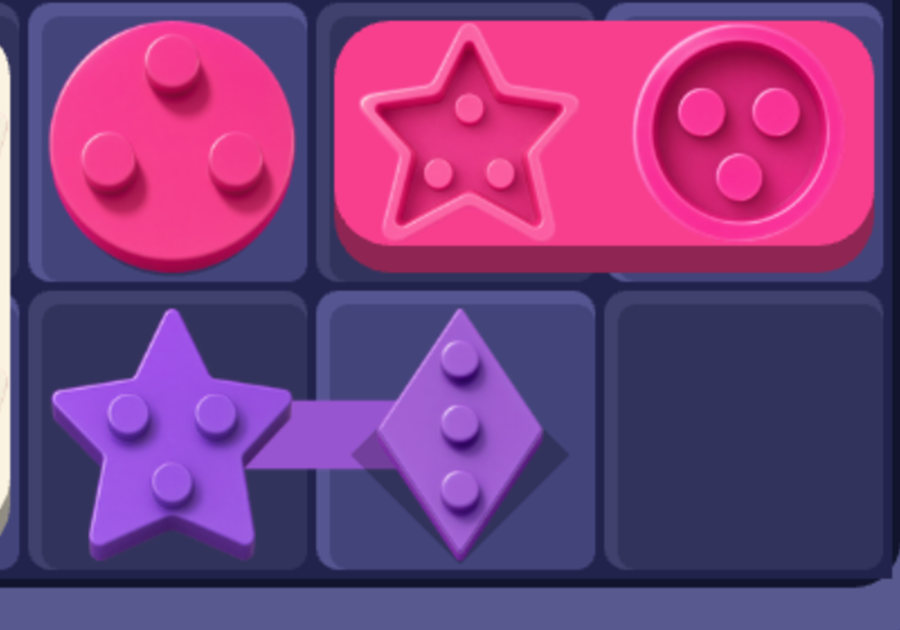
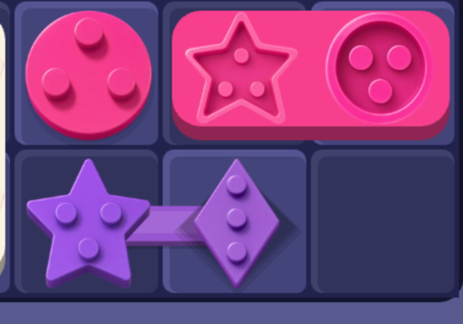

Chốt phải LẮP xuống board, không phải dán lên board
Chỗ chê: viên chốt nhìn như hình dán lơ lửng. Bản cũ đổ bóng bằng
một bản sao đặc của chính hình đó, lệch xuống 7% ô, alpha .25 — mép bóng sắc lẻm y hệt
viên chốt, và nó ló ra thành vành đen ĐỀU cách chân viên hẳn một quãng. Mắt đọc cái quãng đó
ra khe hở giữa viên và mặt board.
Nhưng bóng chỉ nói "vật ở TRÊN nền". Thứ nói "vật này DÀY" là thành đứng —
đúng thứ khung board (FRAME_LIFT) và khay đã dùng, riêng viên chốt thì thiếu:
sprite chốt là tấm nhựa mỏng, thành vẽ sẵn trong ảnh chỉ ~4% chiều cao. Ba ảnh dưới render
thẳng từ game thật, cùng màn 5, chỉ khác cách xử chân viên.
A · Hiện tạiBóng = bản sao đặc lệch xuống, mép sắc. Viên treo lơ
lửng; ở viên kim cương cái bóng còn đọc ra một viên thứ hai màu đen nằm dưới.

B · Bóng tiếp xúcBỏ bản sao, thay bằng ba lớp đồng dạng tán từ
đậm sát chân ra nhạt dần — bóng của vật CHẠM mặt phẳng. Hết lơ lửng, nhưng viên vẫn mỏng
như tấm decal.

C · + THÀNH ĐỨNGĐắp hai tầng tối dần dưới sprite ⇒ viên dày ra,
thành đứng lộ ở đáy đúng màu nhựa của nó. Thanh nối cũng được dựng lại thành khối nhựa
(thành + mặt + gờ bắt sáng) nên cụm chốt nối nhau đọc ra MỘT khối đúc liền.D · C + HỐC LÚNThêm rãnh quanh chân viên: tối ở trên-trái, bắt
sáng ở dưới-phải ⇒ mặt ô bị viên ấn lún xuống, đọc ra "cắm VÀO board". Đổi lại rãnh bám
quanh mọi viên, ở hình nhiều ngóc ngách như ngôi sao thì nó ra như vết bẩn.
Bật bằng SEAT_SOCKET = true.